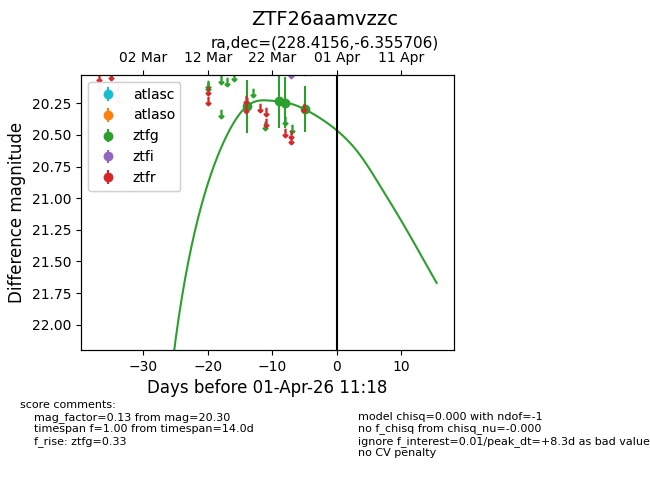
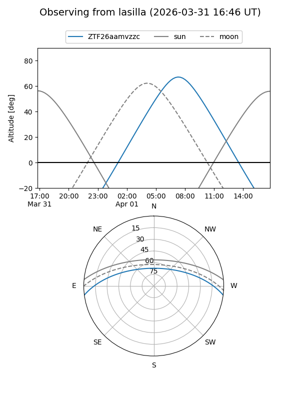
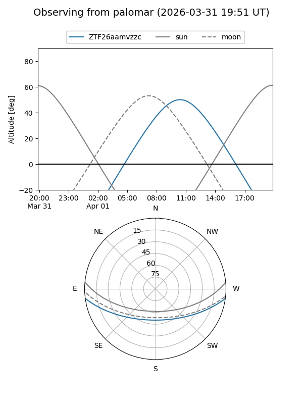
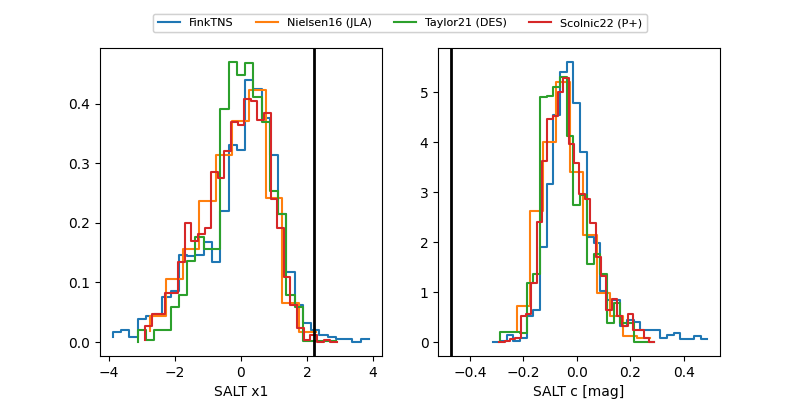

ZTF26aamvzzc
Target ZTF26aamvzzc at 2026-04-01 11:21
Aliases and brokers:
FINK: link
Lasair: link
ALeRCE: link
alt names
ZTF26aamvzzc (ztf,fink_ztf)
Coordinates:
equatorial (ra, dec) = 228.4156,-6.35571
equatorial (HMS+DMS) = 15:13:39.74,-06:21:20.54
galactic (l, b) = (353.9792,+41.99909)
Flags:
Photometry:
last ztfg=20.30
4 ztfg detections
Lightcurve

Visibility


Additional plots
